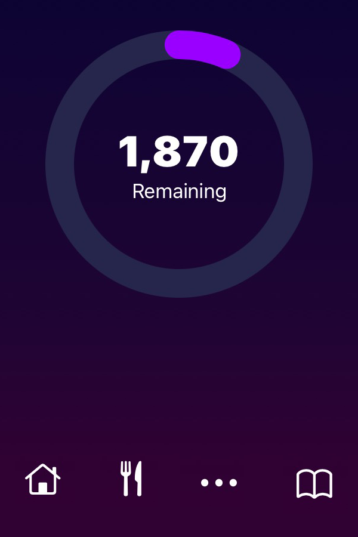
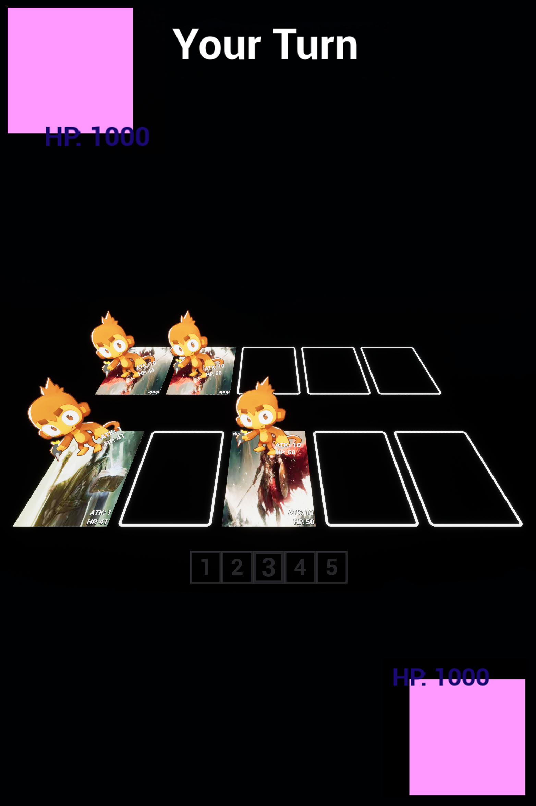

Idle Fisher is my biggest and most ambitious project to date. It's an idle game built around fishing, upgrading, and idling. It's a pretty simple concept but full of challenges. I'm a solo developer, responsible for all aspects of the game. While I initially had help with the artwork, I did not create all the art myself in addition to handling the programming.

When I started this project, I wanted to push myself beyond the boundaries of my previous work. I had made several smaller, unfinished games using traditional game engines, but this time I wanted to both challenge myself and finish a project. To do that, I decided to build the game without a game engine. I chose to write everything in C++ and use the SDL2 library. Over time, I've been transitioning the project to use GLFW, Glad, and GLM to support more advanced graphical features like lighting and shadows.
Through this project, I've gained a much deeper understanding of programming, project organization, and even how computers work at a lower level. Since I'm not using a game engine, I've had to build many systems from scratch, systems that are usually handled for you in popular engines. This includes writing custom classes for animations, UI components like buttons and text, save/load systems, file parsers, and more. Rebuilding these core features has given me a strong appreciation for how game engines work under the hood and has significantly improved my coding skills, especially in areas like architecture, debugging, and managing complexity over time.
One of the biggest challenges has been the math. Features like collision detection, pathfinding, and dynamic shadows required deep dives into matrix math and other advanced concepts. Solving these problems has not only improved my skills but also reminded me how much I enjoy the problem-solving side of development.
A quick video to showcase some of the main features and gameplay of Idle Fisher. In this clip, I demonstrate fishing, interacting with NPC shops, using auto fishers, buying and selling fish, unlocking upgrades, and progressing through new worlds. This project has been a huge learning experience, and I'm excited to keep building and refining it.
Idle Fisher

Multiplayer ENET

CALCulator

Food App
Card Game
Tetris

Pacman

Chess AI

Weight Calculator

Japanese Helper

Kanji